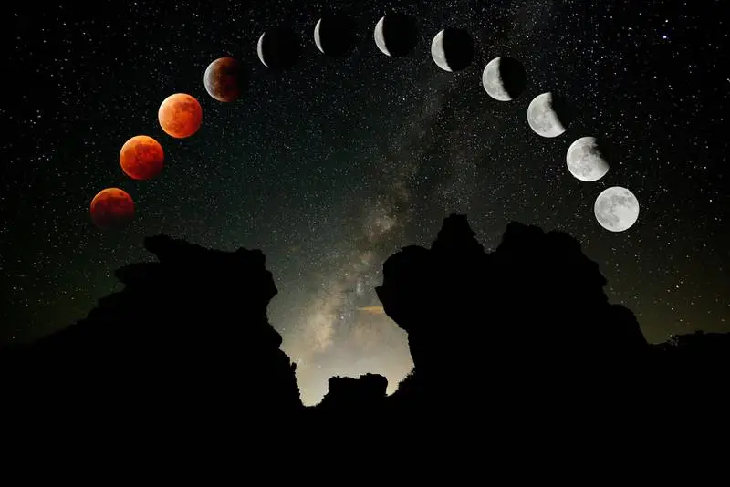
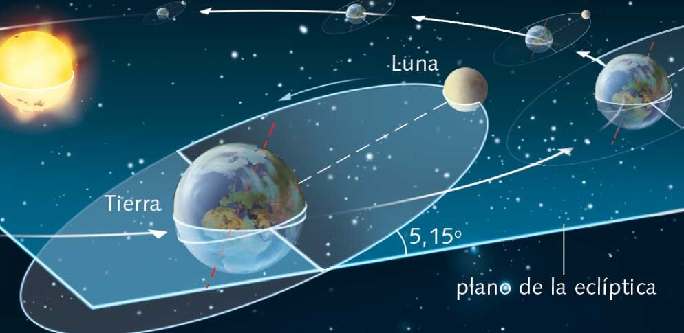
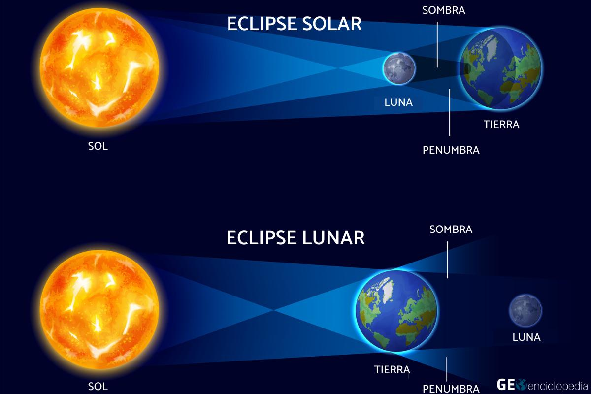

Preguntas Frecuentes
¿Cómo ocurren los eclipses?
Los eclipses son eventos astronómicos que ocurren cuando un cuerpo celeste, como la Luna o un planeta, se encuentra alineado de tal manera que bloquea temporalmente la luz de una fuente luminosa, como el Sol. Hay dos tipos principales de eclipses: eclipses solares y eclipses lunares. Los eclipses no ocurren en cada luna nueva y luna llena debido a que la órbita de la Luna está inclinada con respecto al plano de la órbita de la Tierra alrededor del Sol. Esto significa que la mayoría de las veces, la Luna está por encima o por debajo de la línea imaginaria entre la Tierra y el Sol. Sin embargo, cuando la alineación es lo suficientemente cercana, se producen eclipses. Es importante mencionar que los eclipses solares solo son visibles en regiones geográficas específicas y requieren precauciones especiales para observarlos sin dañar los ojos. En contraste, los eclipses lunares son visibles desde cualquier lugar en la noche en la que la Luna esté sobre el horizonte. Los eclipses son fenómenos naturales asombrosos que han fascinado a la humanidad a lo largo de la historia.
¿Por qué sólo algunas personas en la Tierra ven un eclipse en un momento determinado?
Sólo algunas personas en la Tierra ven un eclipse en un momento determinado porque la trayectoria de la sombra de la Luna o la Tierra sólo atraviesa una pequeña parte de la superficie terrestre. En el caso de un eclipse solar, la sombra de la Luna es muy pequeña en comparación con la superficie de la Tierra. La sombra de la Luna sólo es visible desde un estrecho camino en la Tierra, llamado la banda de totalidad. La banda de totalidad es de unos 100 kilómetros de ancho y puede recorrer varios miles de kilómetros de longitud. En el caso de un eclipse lunar, la sombra de la Tierra es mucho más grande que la sombra de la Luna. La sombra de la Tierra puede cubrir toda la superficie de la Luna. Sin embargo, la sombra de la Tierra sólo es visible desde una parte de la Tierra, llamada la zona de sombra. La zona de sombra es de unos 1500 kilómetros de ancho. Por lo tanto, para ver un eclipse solar o lunar, es necesario estar dentro de la banda de totalidad o de la zona de sombra.
¿Qué causa que el Sol, la Luna y la Tierra se alineen?
La causa principal de que el Sol, la Luna y la Tierra se alineen es la gravedad. La gravedad es una fuerza que atrae a los objetos entre sí. En el caso del sistema solar, la gravedad del Sol mantiene a la Tierra y la Luna en órbita a su alrededor. La Tierra y la Luna orbitan alrededor del Sol en planos diferentes. Sin embargo, estos planos están inclinados entre sí unos 5 grados. Esto significa que la Luna no siempre está alineada con el Sol y la Tierra. Para que ocurra un eclipse, la Luna debe estar en su fase nueva o llena, y debe estar en una posición en su órbita que la coloque en la misma línea que el Sol y la Tierra.
¿Con qué frecuencia ocurren los eclipses?
En promedio, hay dos eclipses solares y dos eclipses lunares al año. Sin embargo, esta frecuencia puede variar. El número mínimo de eclipses que puede ocurrir en un año es dos, y el máximo es siete.
Eclipses solares
El número de eclipses solares que puede ocurrir en un año es de dos a cinco. Los eclipses solares totales son los más raros, y solo pueden ocurrir aproximadamente cada 18 meses.
Eclipses lunares
El número de eclipses lunares que puede ocurrir en un año es de dos a seis. Los eclipses lunares totales son más comunes que los eclipses solares totales, y pueden ocurrir aproximadamente cada dos años.
Período de eclipse
El período de eclipse es el tiempo que transcurre entre dos eclipses del mismo tipo. El período de eclipse solar es de aproximadamente 18 meses, y el período de eclipse lunar es de aproximadamente 35 días.
¿Cómo saben los científicos cuándo y dónde ocurrirán los eclipses?
Los científicos saben cuándo y dónde ocurrirán los eclipses usando las leyes de la mecánica celestial. Estas leyes describen el movimiento de los planetas, las lunas y las estrellas. La órbita de la Luna alrededor de la Tierra está inclinada unos 5 grados con respecto a la órbita de la Tierra alrededor del Sol. Esto significa que la Luna no siempre está alineada con el Sol y la Tierra. Para que ocurra un eclipse, la Luna debe estar en su fase nueva o llena y debe estar en una posición en su órbita que la coloque en la misma línea que el Sol y la Tierra. Los científicos pueden usar las leyes de la mecánica celestial para calcular la posición de la Luna en su órbita. Esto les permite predecir cuándo y dónde ocurrirán los eclipses.
Eclipses solares
Para predecir un eclipse solar, los científicos calculan la posición de la Luna en su órbita con respecto al Sol. Si la Luna está en la misma línea que el Sol y la Tierra, entonces se producirá un eclipse solar. Los científicos pueden usar un software de simulación para visualizar cómo se producirá el eclipse. Esto les permite predecir la duración y la magnitud del eclipse.
Eclipses lunares
Para predecir un eclipse lunar, los científicos calculan la posición de la Tierra en su órbita con respecto a la Luna. Si la Tierra está en la misma línea que el Sol y la Luna, entonces se producirá un eclipse lunar. Los científicos pueden usar un software de simulación para visualizar cómo se producirá el eclipse. Esto les permite predecir la duración y la magnitud del eclipse.
Precisión
Los científicos pueden predecir la fecha, hora y ubicación de un eclipse con gran precisión. Sin embargo, es importante tener en cuenta que las órbitas de los planetas y las lunas no son perfectas. Esto puede causar pequeñas variaciones en la trayectoria de la sombra de la Luna o la Tierra.
¿Cuál es la diferencia entre un eclipse lunar y solar?
La principal diferencia entre un eclipse lunar y solar es que en un eclipse lunar la Tierra bloquea la luz del Sol que llega a la Luna, mientras que en un eclipse solar la Luna bloquea la luz del Sol que llega a la Tierra.
Eclipse lunar
En un eclipse lunar, la Tierra se interpone entre el Sol y la Luna. La Tierra, que es mucho más grande que la Luna, proyecta su sombra sobre la superficie lunar. Esto hace que la Luna parezca volverse de color rojo oscuro.
Hay tres tipos de eclipses lunares:
- Eclipse total: La Tierra cubre completamente la luz solar, lo que hace que la Luna se vuelva de color rojo oscuro.
- Eclipse parcial: La Tierra no cubre completamente la luz solar, lo que hace que la Luna se oscurezca parcialmente.
- Eclipse penumbral: La Luna pasada por la penunbra de la Tierra, causando que se oscurezca sutilmente.
Eclipse solar
En un eclipse solar, la Luna se interpone entre el Sol y la Tierra. La Luna, que es mucho más pequeña que el Sol, bloquea la luz solar que llega a la Tierra. Esto hace que el Sol parezca oscurecerse.
Hay tres tipos de eclipses solares:
- Eclipse total: La Luna cubre completamente el disco solar.
- Eclipse anular: La Luna no cubre completamente el disco solar, dejando un anillo de luz visible.
- Eclipse parcial: La Luna cubre solo una parte del disco solar.
¿Qué es una temporada de eclipses y por qué ocurren aproximadamente cada seis meses (o dos veces al año)?
Una temporada de eclipses es un período de tiempo de aproximadamente seis meses durante el cual pueden ocurrir eclipses solares y lunares. Las temporadas de eclipses ocurren aproximadamente dos veces al año porque la órbita de la Luna alrededor de la Tierra está inclinada unos 5 grados con respecto a la órbita de la Tierra alrededor del Sol. Durante una temporada de eclipses, la Luna pasa a través de la sombra de la Tierra o el Sol dos veces. La primera vez que la Luna pasa a través de la sombra, se produce un eclipse solar. La segunda vez que la Luna pasa a través de la sombra, se produce un eclipse lunar. En promedio, hay dos eclipses solares y dos eclipses lunares al año. Sin embargo, esta frecuencia puede variar. El número mínimo de eclipses que puede ocurrir en un año es dos, y el máximo es siete.